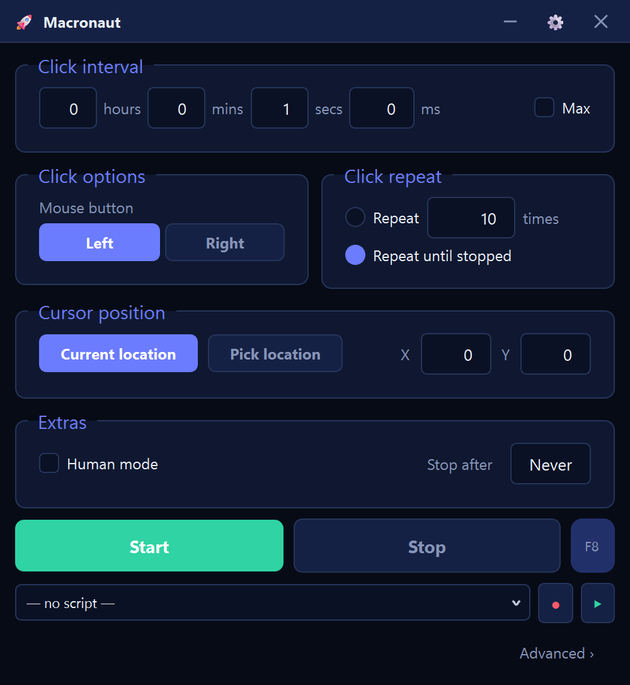

Macronaut → Auto clicker
A free auto clicker for Windows
Set how often to click, pick a button, say how many times, press Start. That is the whole thing. It is a single 78 MB file for Windows 10 and 11 — no installer, no account, no advertising, and the auto clicker is free permanently rather than for a trial period.
Windows will say “Windows protected your PC” on first run — click More info, then Run anyway. There is a straight answer about why, further down.

Setting it up
- Run the file. Nothing is installed. It goes wherever you put it, it does not need admin rights, and deleting the file removes it completely.
- Type an interval. That is the wait between clicks, in milliseconds. 1000 is one click a second. 100 is ten a second — already faster than almost anyone clicks by hand.
- Pick the button and how many. Left, right or middle; then either leave it running until you stop it, or tick the repeat box and give it a number so it stops on its own.
- Start it. The Start button, or F8. F8 stops it too, and that matters more than it sounds — see below.
Stopping it, which is the part that catches people
An auto clicker clicking ten times a second is genuinely difficult to switch off with the mouse, because every attempt to click a Stop button is racing the clicker for the same cursor. In a full-screen game it is worse: the window you need is behind the one that has taken the screen.
So the stop is a global hotkey. F8 is registered with Windows itself rather than with the window, which means it works whatever is in front and whatever the mouse is doing. If you take one thing from this page, take that: know the stop key before you press start. The other safeguard is the repeat count — an auto clicker that stops itself after 500 clicks cannot run away with your afternoon.
“Windows says it is unsafe”
Two different warnings get confused here, and both have honest answers.
SmartScreen — the blue “Windows protected your PC” box — appears because this file is not code-signed. A signing certificate costs a few hundred euros a year and requires identity verification, and this is a one-person project that has not bought one yet. SmartScreen shows that box for any program it has not seen before and cannot attribute to a known publisher. It is a statement about the paperwork, not about the contents.
Antivirus software sometimes flags auto clickers generally, because sending synthetic mouse and keyboard input is a capability that malware also uses. There is no way to write an auto clicker that does not do this — it is the entire job. What you can do is check: the file published on the releases page carries a SHA-256 hash in its update manifest, so you can confirm the file you downloaded is the file that was published, and upload it to a multi-engine scanner yourself if you want a second opinion.
Or read it. Macronaut is open source under the GPL v3, so the
question “what does this thing actually do with my keyboard?”
has an answer you can check rather than one you have to accept:
the source is here, and
pyinstaller macronaut.spec rebuilds the same executable from
it. That is worth insisting on from any auto clicker, not just this
one.
The general rule, which applies to every tool in this category and not only this one: auto clickers are a favourite wrapper for adware, because people download them in a hurry and click through installers. Prefer a single executable over an installer, prefer a download that comes from a page you can trace to a person, and be suspicious of any “free auto clicker” that arrives as a setup wizard with optional extras.
Choosing an interval
| Interval | Rate | What it suits |
|---|---|---|
| 1000 ms | 1 / second | Keeping a session or a screen awake. |
| 500 ms | 2 / second | Steady, unmistakably deliberate work. |
| 200 ms | 5 / second | About as fast as an unhurried person clicks. |
| 100 ms | 10 / second | Faster than most people manage by hand. |
| 50 ms | 20 / second | Fast enough that some programs begin dropping clicks. |
| 10 ms | 100 / second | Rarely does anything the 50 ms setting did not. |
Smaller is not better. Past a point the program being clicked stops keeping up and quietly ignores the surplus, so the only thing a tiny interval reliably adds is CPU load. If you are not sure, start at 100 ms and go down only if it is genuinely too slow. The click speed test is a quick way to see what your own hand does for comparison.
Games, honestly
A lot of auto clicker traffic is game traffic, so this deserves a straight answer rather than a footnote. Many online games prohibit automation and enforce it — suspensions and permanent bans are normal outcomes, and the risk belongs to every auto clicker equally. Read the rules of the specific game and decide for yourself.
The other half is technical: some games ignore ordinary injected input entirely, so nothing happens. Macronaut has three input backends for that — ordinary injection, SendInput scancodes, and an Interception kernel driver that presents as a real keyboard — switchable from a dropdown when the first one has no effect.
When a clicker is not enough
An auto clicker repeats one thing on a timer. Sooner or later a job needs more: click here, wait for something to appear, type a line, click there. That is the other half of Macronaut, one link away under Advanced — record what you do once and it becomes an editable flow, or drag the steps onto a canvas and wire them together. It can wait for an image, read text on screen with Windows’ own OCR, and branch on what it finds.
You never have to go near it. The auto clicker is the window it opens on, and it reopens on whichever of the two you closed it on.
Other free auto clickers
There are several, some of them long-established and perfectly good. Where this one differs: it is a single file rather than an installer, it carries no advertising, and the same download grows into a full macro tool if the simple version stops being enough. Where it loses: it is 78 MB against a few hundred kilobytes for the smallest of them, because it bundles a whole UI toolkit — and it is not code-signed, while some of the older ones are.
If you came here from AutoHotkey, there is a side-by-side comparison, including what AutoHotkey still does better. If you came from TinyTask, that comparison is here.
Questions
Is the free version a trial?
No. The auto clicker does not expire, has no watermark and does not nag. A paid tier exists for the screen-watching features of the wider tool and is not switched on yet — right now everything is free, including the parts that will not stay free.
Does it need an internet connection?
Only to check for updates, which can be turned off. The clicking itself happens entirely on your machine.
Can it click somewhere specific rather than where the cursor is?
Yes, but that is the canvas rather than the simple screen: a Click step takes coordinates, and you can pick them by pointing at the spot. The simple auto clicker deliberately clicks wherever the cursor already is, because that is what almost everyone wants.
Will it work on macOS or Linux?
No. It is Windows 10 and 11, 64-bit, and there is no build for anything else.
Where does it store things?
In your user profile, alongside your saved automations. Nothing is written to the Windows directory and nothing is added to the registry, so deleting the file and that folder removes it entirely.
Wrong about something here, or it did not work? gerbenvanpoucke0@gmail.com reaches the person who wrote it.